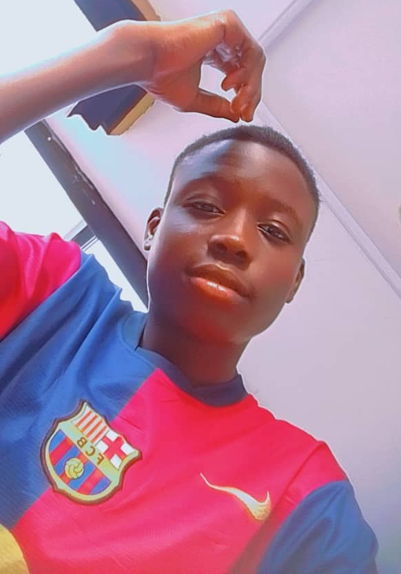

Ejimofor wilson | WDD 130
hello!my name is wilson ejimofor. i am from nigeria, benin city, edo state. i am a beginner in software development, i'm currently learning programming and web development. i'm interested in professional growth and want to create something meaningful, possibly a website about my skills. my goals is to create my own websites for my profession and passion, master html forms and web design step by step. My journey is fueled by curiosity, creativity, and an unyielding drive to learn and create.I'm a firm believer in the power of open source. Check out my GitHub repositories for some exciting collaborations and shared knowledge.I'm on a journey to make a meaningful impact in the tech world.